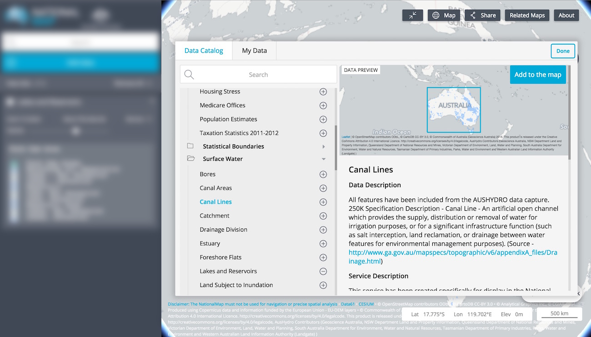

Data Catalogue

A wealth of spatial data has been made available though NationalMap, all of which can be accessed via the Data Catalogue. To launch the Data Catalogue, click the Add Data button in the left hand panel opposite the map.
Data sets displayed in the Data Catalogue are directly referenced from data.gov.au or from a server provided by the relevant department or agency. The NationalMap does not store any of the data it serves. For example, if you access data relating to broadband availability and quality, you are accessing that data directly from the Department of Communications and the Arts. When you access data relating to surface geology, it is accessed directly from Geoscience Australia. If you access data relating to water, it is typically coming directly from the Bureau of Meteorology. The NationalMap itself does not store any data - it provides a map-based view of data that is stored by a growing number of government bodies.
You can see details of the department or agency that provides the spatial data by clicking on the title of your prefered data set in the Data Catalogue.